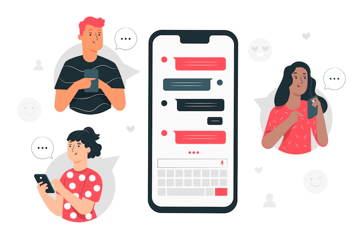

Welcome
Hi,Im Muhammad.Zulkifli CandidateFrondEnd
More Info

Hi, Introducing my name is Muhammad ZUlkifli, I was born in Polewali Mandar and live in Belopa. After graduating from high school from Belopa, I decided to continue my education at Cokroaminoto Palopo University. for the major that I took, namely informatics engineering and aspired to become a front end or full stack developer. then my hobby is playing basketball and thank you :)
My Favotit and Hobby For In a day my life
Sandika Galih adalah seorang Dosen dan Content Creator dan pembuat karya Web Programming Video Tutorial. Cara dia mengajar yang sangat jelas membuat orang awam dan orang yang sudah paham menjadi lebih mengerti lagi mengenai dasar sesuatu.
Front end adalah memindahkan desain yang dibuat oleh UI designer dalam bentuk yang lebih interaktif dan membuat desain tersebut menjadi lebih hidup.Dimana salah satu bagian dari website yang menampilkan tampilan pada para pengguna. Bagian ini dibuat dengan menggunakan HyperText Markup Language (HTTP), Cascading Style Sheets (CSS), dan juga JavaScript. Sehingga, suatu URL bekerja dan menampilkan web yang bagus.
Bermain basket adalaah salah satu hobi yang membuat saya cukup tertarik dan senang melakukannya , bukan hanya sekedar bermain basket saja , basket merupakan salah satu olahraga yang membuat saya mengerti apa itu team dan teman bahkan membuat saya merasa lebih baik saat olahraga basket.